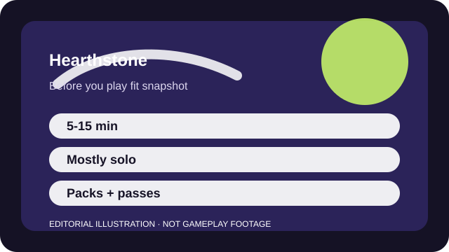

BEFORE YOU PLAY
What this page is and is not
This is a sourced editorial fit profile. It is designed to help with a yes-or-no play decision, and it does not claim a scored hands-on review.
The key fit question is whether you enjoy deck identity and matchup knowledge enough to revisit the game after each expansion. If yes, the short match length becomes a strength. If no, the collection treadmill can feel louder than the strategy.
The first-session loop to judge is simple: Build or borrow a deck, navigate short matches, and refine how you trade tempo, value, and risk.
Daily quests, collection growth, and ranked ladders drive regular engagement.

FIT SNAPSHOT
Hearthstone at a glance
| Genre | Digital card game |
|---|---|
| Platforms | PC, Mobile |
| Business model | Free-to-play card game with expansion bundles, packs, and seasonal reward tracks. |
| Typical session | 5-15 minute matches that fit well on PC or mobile. |
| Play style | turn-based ladder strategy |
| Learning barrier | The interface is welcoming, but collection efficiency and format knowledge matter as soon as you want several decks. |
| Social shape | Hearthstone is mostly a solo queue game; the social layer is more about discussing decks than live teamwork. |
WHO IT FITS
Best fit, likely friction, and the social reality
players who want turn-based strategy in short windows on PC or mobile
players who hate meta churn, card acquisition systems, or randomness in outcomes
Hearthstone is mostly a solo queue game; the social layer is more about discussing decks than live teamwork.
Daily quests, collection growth, and ranked ladders drive regular engagement.
FIRST SESSION PLAN
How to test the fit in one evening
- Finish the tutorial path and let the game teach board flow before crafting anything.
- Pick one mode and one starter deck instead of sampling every queue in one night.
- Avoid crafting niche cards until you know what style of deck you actually enjoy.
- Decide whether collection building feels motivating before treating every set release as an obligation.
Use the first session to answer these fit questions instead of judging rank, win rate, or store value immediately.
- Do you want strategy in ten-minute windows more than long live matches?
- Are card rotations a plus because they refresh the game, or a hassle because they age your collection?
- Can you commit to one or two decks instead of wanting every archetype immediately?
TIME, COST, AND COMMITMENT
What you are really signing up for
| Session budget | 5-15 minute matches that fit well on PC or mobile. |
|---|---|
| Social demand | Hearthstone is mostly a solo queue game; the social layer is more about discussing decks than live teamwork. |
| Progression shape | Daily quests, collection growth, and ranked ladders drive regular engagement. |
| Spending pressure | You can play for free, but building many competitive decks quickly usually means money or careful long-term dust management. |
It is easy to sample in tiny sessions, but maintaining a broad card pool is the real long-term friction.
You can play for free, but building many competitive decks quickly usually means money or careful long-term dust management.
SOURCES AND LIMITS
What was checked, and what can change
- Standard format rotations can redefine what a beginner-friendly deck looks like.
- Balance patches and mini-sets move the meta more often than the interface suggests.
- Bundle pricing and reward-track structures change independently of the core card-game fit.
This profile uses official game pages and defensible general product knowledge to frame the player fit. It does not claim live testing across every platform, accessibility need, or current event rotation.